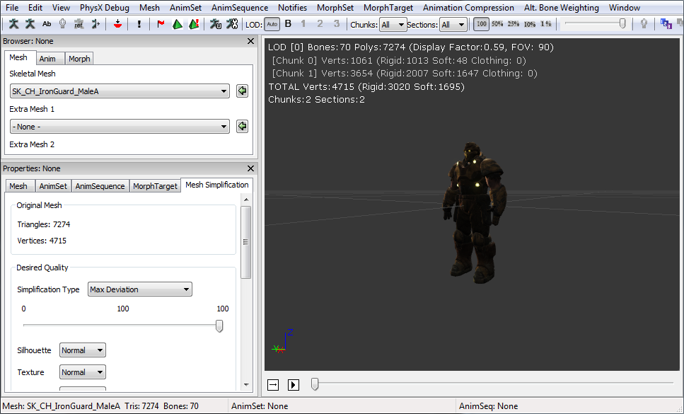
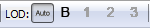
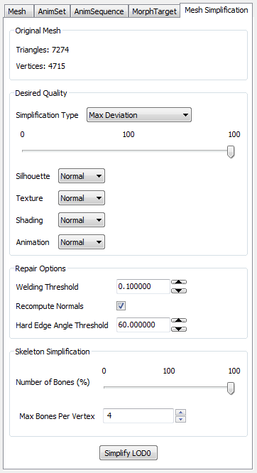

UDN
Search public documentation:
SkeletalMeshSimplificationToolJP
English Translation
中国翻译
한국어
Interested in the Unreal Engine?
Visit the Unreal Technology site.
Looking for jobs and company info?
Check out the Epic games site.
Questions about support via UDN?
Contact the UDN Staff
中国翻译
한국어
Interested in the Unreal Engine?
Visit the Unreal Technology site.
Looking for jobs and company info?
Check out the Epic games site.
Questions about support via UDN?
Contact the UDN Staff
Skeletal Mesh Simplification Tool (骨格メッシュ単純化ツール)
どのように機能するか
ツールウインドウを呼び出す

メッシュの単純化

好みの単純化設定値を選択し、[ Simplify LOD ] (LOD の単純化) ボタンをクリックします。メッシュが、ただちに、AnimSet エディタおよび他のエディタのビューポートで更新されます。
Quality (クオリティ) エディタは、メッシュの誤差量を計算するために、Desired Quality (望ましいクオリティ) の値を使用します。この誤差量は、新たなメッシュがソースとなるメッシュのサーフェスから乖離しすぎるようなメッシュを、ツールが単純化しないようにさせるためのものです。この手法の利点は、任意のトライアングル制限数で止まることなく、ソースとなるメッシュの偏差の範囲内で、ツールがメッシュを自動的に最適化できるという点です。Quality の 100 という値は、最大クオリティとして見なされ、必ずソースとなるメッシュがリストアされます。 Silhouette (シルエット) メッシュのシルエットがどのくらい重要であるかを指定することができます。 Normal (通常)、 High (高い)、 Highest (最高) から選択します。より高い設定値を選択すると、単純化において、メッシュのジオメトリ形状がよりよく保存されますが、トライアングル数が多くなります。 Texture (テクスチャ) テクスチャの密度がどのくらい重要であるかを指定することができます。 Normal (通常)、 High (高い)、 Highest (最高) から選択します。より高い設定値を選択すると、単純化によって、テクスチャの引き伸ばされたアーティファクトを避けることができますが、トライアングル数が多くなります。 Shading (シェーディング) シェーディングの重要度を設定することができます。 Normal (通常)、 High (高い)、 Highest (最高) から選択します。高い設定値を選択すると、単純化によって、光源処理のアーティファクトを避けることができますが、トライアングル数が多くなります。 アニメーション アニメーションの重要度を選択することができます。 Normal (通常)、 High (高い)、 Highest (最高) から選択します。高い設定値を選択すると、単純化によって、アニメーションのアーティファクトを避けることができますが、トライアングル数が多くなります。 Normals (法線) 単純化されたメッシュのために法線を生成する場合、4 つのオプションから 1 つを選択することができます。- Recompute Normals (法線の再計算) : Simplygon に、単純化されたメッシュのための法線を再計算させます。
- Recompute Normals (Smooth) (法線の再計算 (スムーズ) : スムーズエッジを重視して Simplygon に、単純化されたメッシュのための法線を再計算させます。
- Recompute Normals (Hard) (法線の再計算 (ハード) : ハードエッジを重視して Simplygon に、単純化されたメッシュのための法線を再計算させます。
LOD の生成
 次に、LOD を生成するための制約を選択するように求められます。
次に、LOD を生成するための制約を選択するように求められます。
 この LOD を交換したい距離 (View Distance) を選択します。さらに、ソースメッシュから乖離することが許されるピクセルの数 (Allowed Pixel Error) を指定します。最後に、[ OK ] ボタンをクリックして、LOD を生成します。
LOD を生成する際、エディタが自動でクオリティ量を計算します。許容ピクセル誤差 (allowed pixel error) によって、指定の距離にメッシュがポップしたときに許容できるピクセル数が、エディタに知らされます。たとえば、距離を 2000 に、許容ピクセル誤差を 1 にセットすると、距離 2000 から見たとき、生成される LOD が 1 ピクセルを超えて乖離しないことになります。この計算量は近似値です。この計算量には、前提とされていることがあります。バックバッファのサイズが 1280x720 が想定されており、視野角が 90 度に想定されています。この近似値は、生成された LOD のクオリティを微調整する出発点としての役割を担っています。
このようにして LOD が生成されると、エディタによって LOD の Display Factor (表示要因) が自動的にセットされることによって、生成時に選択した距離で LOD が交換されます。
LOD が作成されると、おそらくクオリティを調整する必要があるはずです。メッシュを単純化するための指示に従い、生成した LOD を必ず選択するようにしてください。
この LOD を交換したい距離 (View Distance) を選択します。さらに、ソースメッシュから乖離することが許されるピクセルの数 (Allowed Pixel Error) を指定します。最後に、[ OK ] ボタンをクリックして、LOD を生成します。
LOD を生成する際、エディタが自動でクオリティ量を計算します。許容ピクセル誤差 (allowed pixel error) によって、指定の距離にメッシュがポップしたときに許容できるピクセル数が、エディタに知らされます。たとえば、距離を 2000 に、許容ピクセル誤差を 1 にセットすると、距離 2000 から見たとき、生成される LOD が 1 ピクセルを超えて乖離しないことになります。この計算量は近似値です。この計算量には、前提とされていることがあります。バックバッファのサイズが 1280x720 が想定されており、視野角が 90 度に想定されています。この近似値は、生成された LOD のクオリティを微調整する出発点としての役割を担っています。
このようにして LOD が生成されると、エディタによって LOD の Display Factor (表示要因) が自動的にセットされることによって、生成時に選択した距離で LOD が交換されます。
LOD が作成されると、おそらくクオリティを調整する必要があるはずです。メッシュを単純化するための指示に従い、生成した LOD を必ず選択するようにしてください。